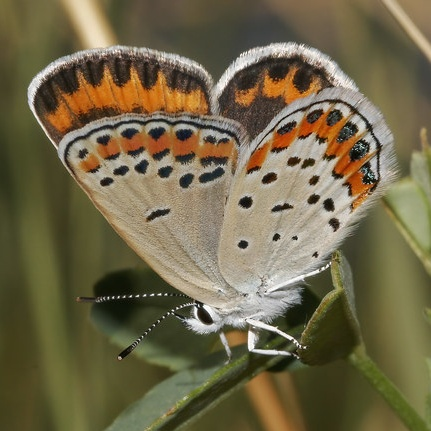

Plebejus melissa
- Common name
- Melissa Blue
- Family
- Lycaenidae
- Family common name
- Gossamer Wings
- On the wing
- L April to L September, peaks in May and August
Two to three generations; one at higher elevations.
- Habitat
- Low- to mid-elevation prairie, steppe, agricultural and disturbed habitats such as roadsides and ditches.
- Larval host:
- Lotus, locoweeds, lupines, licorice, milk-vetvhes, vetches, other legumes.
- Nectar plants:
- Hosts, plus goldstar, daisies, mustards, milkweed, and yellow star thistle.
- Abundance
- C
Range Map
Seasonality